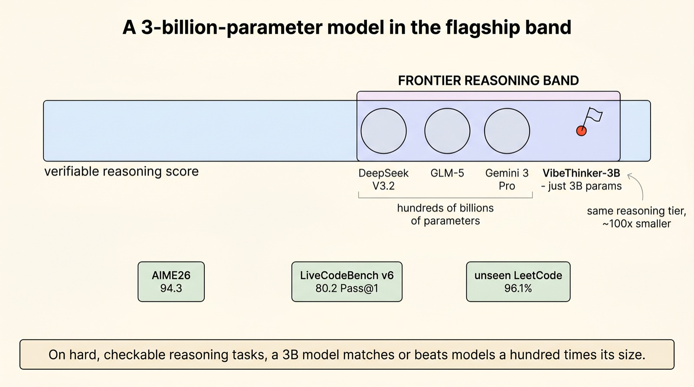
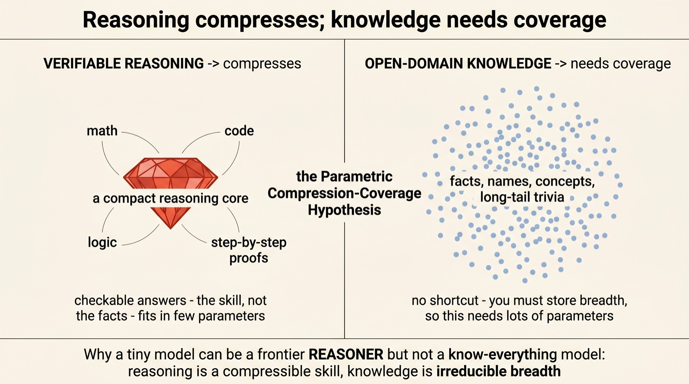
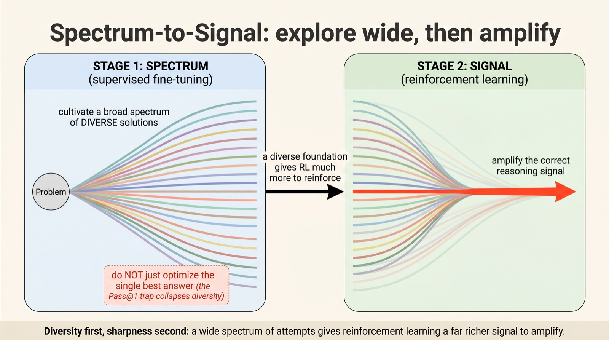
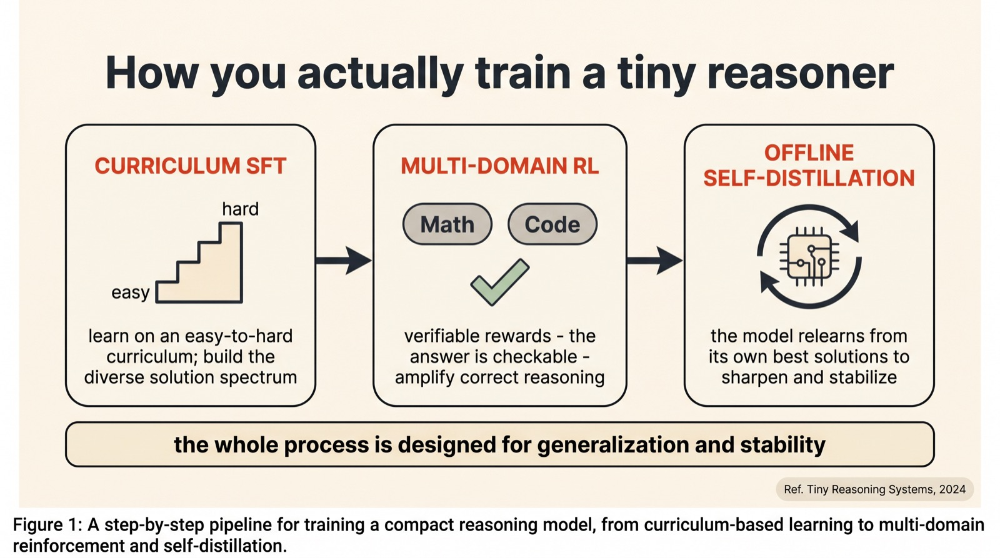
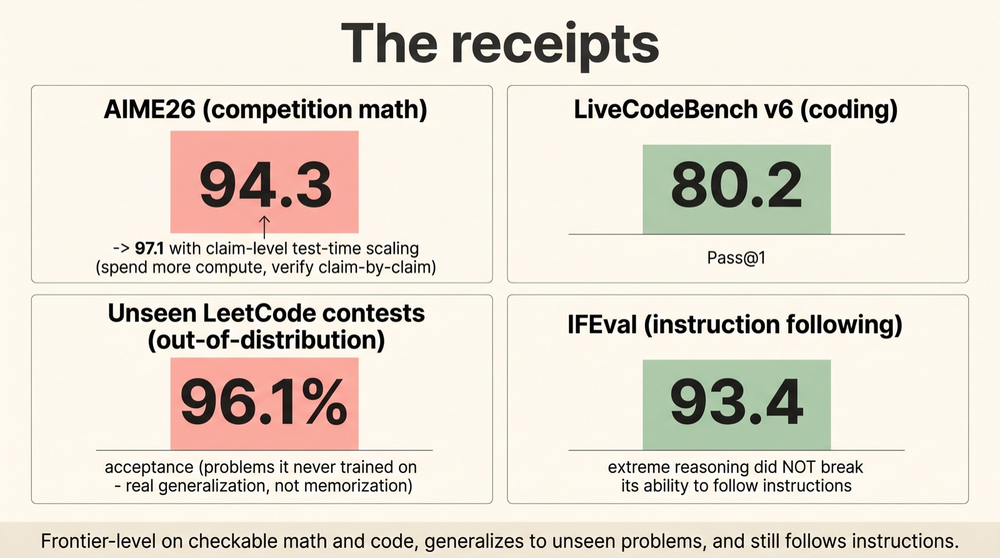
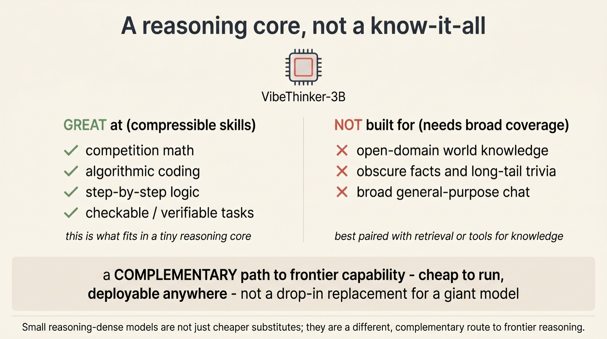

A 3-billion-parameter model that reasons like a giant
Small model,
big logic
We were told deep reasoning needs scale — hundreds of billions of parameters. VibeThinker-3B, a model small enough to run on a laptop, scores 94.3 on competition math and matches Gemini 3 Pro and DeepSeek V3.2 on the hardest verifiable tasks. The trick isn't size. It's how you train, and what you ask a small model to hold.
From Weibo's AI lab, extending their 1.5B "Tiny Model, Big Logic." The recipe is a training philosophy they call Spectrum-to-Signal — explore a wide spectrum of solutions before sharpening to the correct one — and a hypothesis about which skills compress into few parameters and which don't. We'll explain both, look at the receipts, and be honest about what a tiny reasoner can and can't do.
Scroll to begin.
↓
The three-billion-parameter surprise
For the last few years, the path to a smarter model has felt like a law of nature: add parameters. Reasoning — the ability to work through a hard math olympiad problem or a tricky coding challenge step by step — seemed to be the most scale-hungry skill of all, the last thing a small model could ever do well. VibeThinker-3B is a polite, well-evidenced argument that this was never quite true.
It has three billion parameters. That's small enough to run on a single consumer GPU, even a good laptop — and perhaps a hundred times smaller than the flagship systems it's being compared to. Yet on the tasks where you can actually check the answer, it lands in the same band as DeepSeek V3.2, GLM-5, and Gemini 3 Pro: 94.3 on AIME26 (a brutal competition-math benchmark), 80.2 on the LiveCodeBench coding suite, and a 96.1% acceptance rate on brand-new LeetCode contests it had never seen.

That last number matters most. A model can memorise old exam papers; it cannot memorise a contest that didn't exist when it was trained. Scoring 96% on unseen problems means VibeThinker is genuinely reasoning, not reciting. So the interesting question isn't "is it real?" — it's how does so much reasoning fit in so few parameters?
Why reasoning fits in a small box
The paper's central idea is a clean distinction that, once you hear it, is hard to unhear. Call it the Compression-Coverage hypothesis: not all of a model's abilities have the same shape. Some are skills; some are breadth. And the two demand very different amounts of memory.
Verifiable reasoning — math, code, formal logic, anything with a checkable answer — turns out to be a compressible skill. It's a way of manipulating symbols and chaining steps, and that procedure can be squeezed into a surprisingly compact "reasoning core." You don't need to have memorised a billion facts to follow a proof; you need to have internalised how proofs work.

Open-domain knowledge is the opposite. There's no elegant compression of "who won the 1978 World Cup" or "the boiling point of acetone" — facts are irreducible breadth, and storing more of them genuinely needs more parameters. This is why a 3B model can be a frontier reasoner and still be a poor general-knowledge chatbot: it kept the compressible part and gave up the part that demands sheer size. The smallness isn't a compromise on reasoning — it's a deliberate bet about which capability to pack in.
The Pass@1 trap
Knowing reasoning is compressible doesn't tell you how to compress it. That's where VibeThinker's training philosophy comes in — and it starts by rejecting a habit that almost everyone else follows.
When you fine-tune a model, the obvious goal is to make its single best answer correct as often as possible — to maximise what's called Pass@1. Sensible as it sounds, the authors argue it's a trap. Optimising hard for one right answer quietly crushes diversity: the model collapses onto a single way of solving things and forgets the dozen other routes it might have taken. And a model with only one idea is a terrible starting point for the next training stage.

Their fix is the Spectrum-to-Signal principle. In the first stage, you do the opposite of the usual advice: you deliberately cultivate a broad spectrum of diverse solution paths, prizing variety over getting any single answer right. Only then, in the second stage, does reinforcement learning go to work — amplifying the correct signal hiding inside that rich, varied space. A wide net first; a sharp filter second. Diversity gives the filter something worth keeping.
How you actually train it
Spectrum-to-Signal is the philosophy; the pipeline that implements it has three concrete stages, and each one earns its place.
First, curriculum-based supervised fine-tuning: the model learns on an easy-to-hard ladder of problems, the way a student builds up, while the training is tuned to grow that diverse spectrum of solution styles rather than collapse it. Second, multi-domain reinforcement learning: across both math and code, the model is rewarded purely on whether its answers actually check out — and because those domains are verifiable, the reward signal is clean and honest, with no fuzzy human preference to game. Third, offline self-distillation: the model relearns from its own best solutions, sharpening and stabilising what it found.

What's striking is how cheap this is. The 1.5B predecessor that pioneered the recipe was trained, end to end, for around $7,800 — a rounding error next to the budgets of the giants it competes with. Frontier reasoning, it turns out, may be less about who can afford the most GPUs and more about who trains most cleverly.
The receipts
Numbers, then, because the claim is bold enough to deserve them. On AIME26, the hardest tier of competition mathematics, VibeThinker-3B scores 94.3 — and with claim-level test-time scaling, where it spends extra compute checking its reasoning claim by claim, that climbs to 97.1. On LiveCodeBench v6 it hits 80.2 Pass@1, and on fresh, unseen LeetCode contests it reaches a 96.1% acceptance rate.
One more score guards against an easy failure mode. Models pushed hard toward reasoning often become rigid — brilliant at proofs, hopeless at simply following an instruction. So the authors checked IFEval, which measures strict instruction-following, and VibeThinker scored 93.4. The reasoning glow-up didn't cost it its manners.

What a small reasoner isn't
It would be easy to over-read all this as "small models have caught up, scale is over." That's not the claim, and the Compression-Coverage hypothesis tells you exactly why. VibeThinker is a specialist, not a universal model.
Point it at competition math, algorithmic coding, step-by-step logic — anything checkable — and it is genuinely frontier-class. Ask it who directed an obscure 1970s film, or for a fact from the long tail of human knowledge, and a 3B model simply hasn't the room to store that breadth. The honest framing, which the authors are careful to make, is that a tiny reasoner is a complementary path, not a replacement: cheap to run, easy to deploy, and best paired with retrieval or tools when it needs facts it doesn't carry.

Seen that way, the result is less "David beats Goliath" and more "David and Goliath do different jobs." A giant model carries the world's knowledge; a small reasoner carries a sharp, portable engine for thinking. The interesting future isn't one beating the other — it's the two working together.
Why this matters
Strip away the leaderboard drama and VibeThinker-3B leaves two ideas worth keeping. The first is practical: a frontier-level reasoning engine that runs on a laptop, trained for the price of a used car, is a genuinely democratising thing. It puts serious mathematical and coding ability in reach of anyone — no datacenter, no API bill, no permission required.
The second is conceptual, and it may outlast the model. For years we measured intelligence in parameters, as if capability were a single dial you turn up with scale. The Compression-Coverage hypothesis suggests it's at least two dials — a compressible reasoning dial and a coverage-hungry knowledge dial — and that they should perhaps be built, and bought, separately.
Whether or not VibeThinker is the model people remember, that reframing is the part to carry forward. The next question for small models isn't "how close to GPT can you get?" It's "which capability are you trying to hold, and does it actually need to be big?"